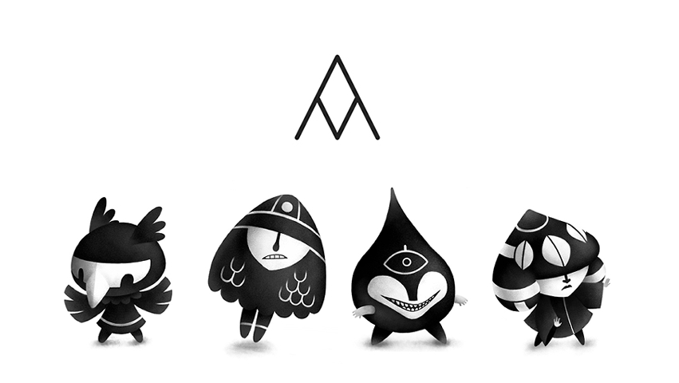
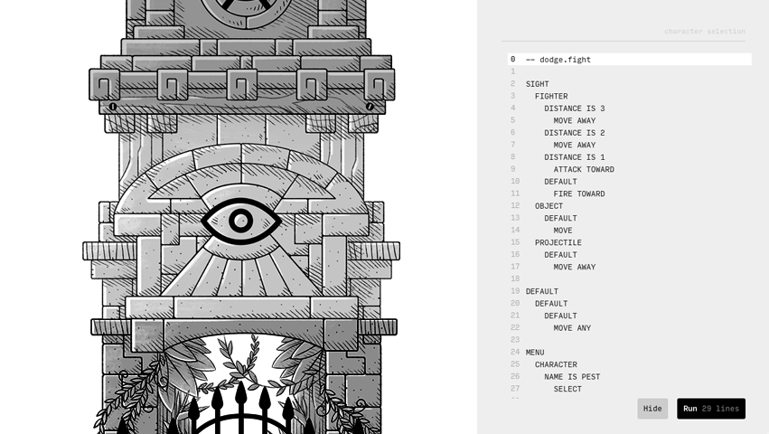
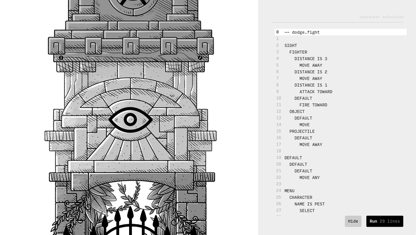

Markl
What is markl?
Mark is an upcoming game, still in development. To progress through the world, you move with a limited set of steps and direction. As a player, you must figure out how to get to where you need to go with these limitations, and to acquire new 'moves' from the Power Givers.
The game is meant to teach players basic programming logic.
Production
Markl is our second game collaboration. We started production of this game in 2016, around the same time we created Hundredrabbits. We had illusions of productivity in those first few months, with learning how to sail and adapting to off-grid living we found work/life difficult to balance. We put hours into the project every week, but when we left Canada to sail south to Mexico we found less and less time to work on it. The reason was simple, this project required connectivity and power — two things we had little of. Markl was not suited for our current situation, and so we put it on the backburner, we instead chose to work on smaller projects like Thousandrooms and Left.
Markl also proved to be very challenging, from a programming perspective. Devine is a self-taught programmer, and is learning all the time. Markl was a monster we weren't ready for.
By the time we arrived in the South Pacific Islands, we needed to pay more attention to the tools we were working with. Tools like Photoshop and Xcode weren't well suited for off-grid low-power living — these, at the time, we needed to complete Markl. We had our eyes set on New Zealand then, thinking that this would be the ideal place to work on such a project, but again, life got in the way. Pino required a lot of repairs. We spent many months in a windowless home, exposed to the elements, making it difficult to focus. During this time, Rekka turned to projects like Wiktopher, and Devine to Dotgrid. We also made the decision to distance ourselves from the Apple environment, abandoning xcode, requiring us to re-build the game, yet again, for the better.
On this voyage across the Pacific, we prioritized our tools rather than our creations because our situation required it. We think this process was very important, even if it greatly delayed the production and release of this project. Devine also acquired the skills to complete the game, while working on projects like Orca.
Markl will be released, we hope, sometime in 2020.
Screenshots
 

Links
If you enjoy our content...
Support Us On Patreon